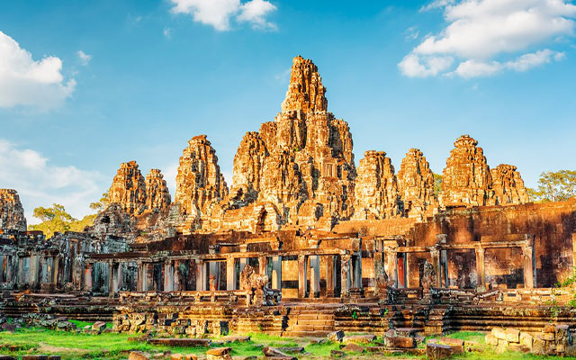
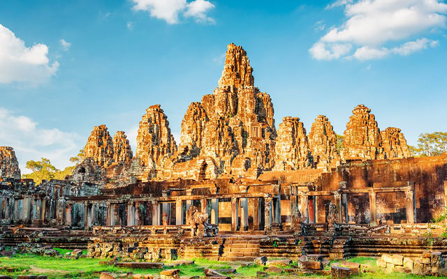
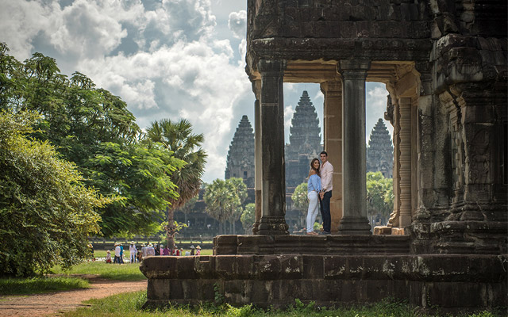
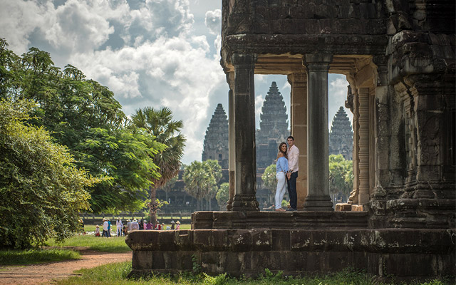

ដំណើរកំសាន្តឯកជន, ពេលល្អឥតខ្ចោះ
អំពីពួកយើង
ការិយាល័យរបស់យើងនៅក្នុងប្រទេសកម្ពុជា មានបុគ្គលិកជំនាញដែលបានបណ្តុះបណ្តាលយ៉ាងមានវិជ្ជាជីវៈ និងមានទឹកដីខ្មែរជាគោលការណ៍។ ពួកគេមានចំណេះដឹងជ្រៅជ្រះអំពីកម្ពុជា ដែលអាចផ្ដល់អនុសាសន៍អំពីទីកន្លែងដ៏អស្ចារ្យបំផុត សម្រាប់ការធ្វើដំណើរតាមបំណងរបស់អ្នក ហើយផ្តល់ជាជំនួយផ្ទាល់ខ្លួនដល់អ្នកគ្រប់ជំហាននៃការធ្វើដំណើរ។
នៅ Travel Cambodia បេសកកម្មរបស់យើងគឺផ្ដល់បទពិសោធន៍ទេសចរណ៍ដើមដល់ដើម ដែលអាចនាំអ្នកទៅស្គាល់ជិតស្និទ្ធនឹងវប្បធម៌ខ្មែរ។ មិនថាជាការរុករកប្រាសាទបុរាណ បទពិសោធន៍ជីវិតនៅភូមិឃុំ ឬសាកល្បងម្ហូបខ្មែរ ផ្ញើរដោយមគ្គុទ្ទេសក៍ជំនាញដែលអាចនិយាយភាសាអង់គ្លេសបានយ៉ាងស្ទាត់ជំនាញ អ្នកនឹងមានអារម្មណ៍ថាជាភ្ញៀវពិសេសក្នុងដំណើរដ៏អនុស្សាវរីយ៍មួយ។
Travel Cambodia: ក្រុមហ៊ុនទេសចរណ៍ជាតិដែលអ្នកអាចទុកចិត្តបាន សម្រាប់បទពិសោធន៍ដ៏ល្អបំផុតនៅកម្ពុជា


 

 
